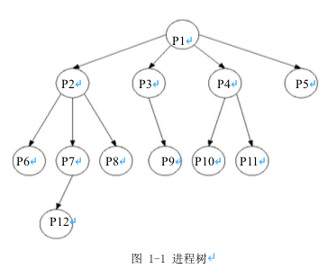
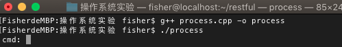
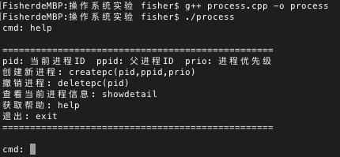
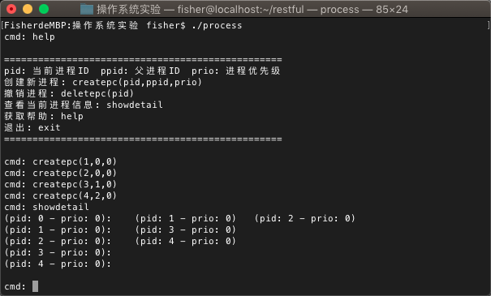

<!DOCTYPE html>
<html lang="zh-CN">
<head>
  <meta charset="UTF-8">
<meta name="viewport" content="width=device-width, initial-scale=1, maximum-scale=2">
<meta name="theme-color" content="#222">
<meta name="generator" content="Hexo 3.9.0">
  <link rel="apple-touch-icon" sizes="180x180" href="/images/icons/logo64.png">
  <link rel="icon" type="image/png" sizes="32x32" href="/images/icons/logo32.png">
  <link rel="icon" type="image/png" sizes="16x16" href="/images/icons/logo32.png">
  <link rel="mask-icon" href="/images/icons/logo200.png" color="#222">

<link rel="stylesheet" href="/css/main.css">


<link rel="stylesheet" href="/lib/font-awesome/css/font-awesome.min.css">


<script id="hexo-configurations">
  var NexT = window.NexT || {};
  var CONFIG = {
    root: '/',
    scheme: 'Gemini',
    version: '7.4.2',
    exturl: false,
    sidebar: {"position":"left","display":"post","offset":12,"onmobile":false},
    copycode: {"enable":true,"show_result":true,"style":null},
    back2top: {"enable":true,"sidebar":false,"scrollpercent":false},
    bookmark: {"enable":false,"color":"#222","save":"auto"},
    fancybox: false,
    mediumzoom: false,
    lazyload: false,
    pangu: false,
    algolia: {
      appID: '',
      apiKey: '',
      indexName: '',
      hits: {"per_page":10},
      labels: {"input_placeholder":"Search for Posts","hits_empty":"We didn't find any results for the search: ${query}","hits_stats":"${hits} results found in ${time} ms"}
    },
    localsearch: {"enable":false,"trigger":"auto","top_n_per_article":1,"unescape":false,"preload":false},
    path: '',
    motion: {"enable":true,"async":false,"transition":{"post_block":"fadeIn","post_header":"slideDownIn","post_body":"slideDownIn","coll_header":"slideLeftIn","sidebar":"slideUpIn"}},
    translation: {
      copy_button: '复制',
      copy_success: '复制成功',
      copy_failure: '复制失败'
    },
    sidebarPadding: 40
  };
</script>

  <meta name="description" content="前言操作系统系列博客的所有实验源自于课程&amp;quot;操作系统原理与实践检验&amp;quot;，代码是参考老师给的&amp;quot;软件工程专业操作系统实验指导书&amp;quot;文档后的改进版本。操作系统是计算机系统的核心，因此了解操作系统的设计和实现思路是必不可少的。了解操作系统的基本要求是：理解进程的概念，理解死锁，掌握银行家算法；掌握页式储存管理的实现原理以及页面置换法">
<meta name="keywords" content="操作系统">
<meta property="og:type" content="article">
<meta property="og:title" content="操作系统实验一：模拟进程的创建">
<meta property="og:url" content="http://www.fisheryung.top/模拟进程的创建.html">
<meta property="og:site_name" content="Fisher&#39;s Blog">
<meta property="og:description" content="前言操作系统系列博客的所有实验源自于课程&amp;quot;操作系统原理与实践检验&amp;quot;，代码是参考老师给的&amp;quot;软件工程专业操作系统实验指导书&amp;quot;文档后的改进版本。操作系统是计算机系统的核心，因此了解操作系统的设计和实现思路是必不可少的。了解操作系统的基本要求是：理解进程的概念，理解死锁，掌握银行家算法；掌握页式储存管理的实现原理以及页面置换法">
<meta property="og:locale" content="zh-CN">
<meta property="og:image" content="http://www.fisheryung.top/images/os/processtree.png">
<meta property="og:image" content="http://www.fisheryung.top/images/os/compile.png">
<meta property="og:image" content="http://www.fisheryung.top/images/os/createhelp.png">
<meta property="og:image" content="http://www.fisheryung.top/images/os/createpc.png">
<meta property="og:updated_time" content="2019-11-13T07:59:25.000Z">
<meta name="twitter:card" content="summary">
<meta name="twitter:title" content="操作系统实验一：模拟进程的创建">
<meta name="twitter:description" content="前言操作系统系列博客的所有实验源自于课程&amp;quot;操作系统原理与实践检验&amp;quot;，代码是参考老师给的&amp;quot;软件工程专业操作系统实验指导书&amp;quot;文档后的改进版本。操作系统是计算机系统的核心，因此了解操作系统的设计和实现思路是必不可少的。了解操作系统的基本要求是：理解进程的概念，理解死锁，掌握银行家算法；掌握页式储存管理的实现原理以及页面置换法">
<meta name="twitter:image" content="http://www.fisheryung.top/images/os/processtree.png">

<link rel="canonical" href="http://www.fisheryung.top/模拟进程的创建.html">


<script id="page-configurations">
  // https://hexo.io/docs/variables.html
  CONFIG.page = {
    sidebar: "",
    isHome: false,
    isPost: true,
    isPage: false,
    isArchive: false
  };
</script>

  <title>操作系统实验一：模拟进程的创建 | Fisher's Blog</title>
  
    <script async src="https://www.googletagmanager.com/gtag/js?id=UA-111555456-1"></script>
    <script>
      var host = window.location.hostname;
      if (host !== "localhost" || !true) {
        window.dataLayer = window.dataLayer || [];
        function gtag(){dataLayer.push(arguments);}
        gtag('js', new Date());
        gtag('config', 'UA-111555456-1');
      }
    </script>


  <noscript>
  <style>
  .use-motion .brand,
  .use-motion .menu-item,
  .sidebar-inner,
  .use-motion .post-block,
  .use-motion .pagination,
  .use-motion .comments,
  .use-motion .post-header,
  .use-motion .post-body,
  .use-motion .collection-header { opacity: initial; }

  .use-motion .site-title,
  .use-motion .site-subtitle {
    opacity: initial;
    top: initial;
  }

  .use-motion .logo-line-before i { left: initial; }
  .use-motion .logo-line-after i { right: initial; }
  </style>
</noscript>

</head>

<body itemscope itemtype="http://schema.org/WebPage">
  <div class="container use-motion">
    <div class="headband"></div>

    <header class="header" itemscope itemtype="http://schema.org/WPHeader">
      <div class="header-inner"><div class="site-brand-container">
  <div class="site-meta">

    <div>
      <a href="/" class="brand" rel="start">
        <span class="logo-line-before"><i></i></span>
        <span class="site-title">Fisher's Blog</span>
        <span class="logo-line-after"><i></i></span>
      </a>
    </div>
        <p class="site-subtitle">自由尋覓快樂別人從沒法感受</p>
  </div>

  <div class="site-nav-toggle">
    <div class="toggle" aria-label="切换导航栏">
      <span class="toggle-line toggle-line-first"></span>
      <span class="toggle-line toggle-line-middle"></span>
      <span class="toggle-line toggle-line-last"></span>
    </div>
  </div>
</div>


<nav class="site-nav">
  
  <ul id="menu" class="menu">
        <li class="menu-item menu-item-home">

    <a href="/" rel="section"><i class="fa fa-fw fa-home"></i>首页</a>

  </li>
        <li class="menu-item menu-item-about">

    <a href="/about/" rel="section"><i class="fa fa-fw fa-user"></i>关于</a>

  </li>
        <li class="menu-item menu-item-tags">

    <a href="/tags/" rel="section"><i class="fa fa-fw fa-tags"></i>标签</a>

  </li>
        <li class="menu-item menu-item-archives">

    <a href="/archives/" rel="section"><i class="fa fa-fw fa-archive"></i>归档</a>

  </li>
  </ul>

</nav>
</div>
    </header>

    
  <div class="back-to-top">
    <i class="fa fa-arrow-up"></i>
    <span>0%</span>
  </div>
  <div class="reading-progress-bar"></div>

  <a href="https://github.com/FisherWY" class="github-corner" title="Follow me on GitHub" aria-label="Follow me on GitHub" rel="noopener" target="_blank"><svg width="80" height="80" viewBox="0 0 250 250" aria-hidden="true"><path d="M0,0 L115,115 L130,115 L142,142 L250,250 L250,0 Z"></path><path d="M128.3,109.0 C113.8,99.7 119.0,89.6 119.0,89.6 C122.0,82.7 120.5,78.6 120.5,78.6 C119.2,72.0 123.4,76.3 123.4,76.3 C127.3,80.9 125.5,87.3 125.5,87.3 C122.9,97.6 130.6,101.9 134.4,103.2" fill="currentColor" style="transform-origin: 130px 106px;" class="octo-arm"></path><path d="M115.0,115.0 C114.9,115.1 118.7,116.5 119.8,115.4 L133.7,101.6 C136.9,99.2 139.9,98.4 142.2,98.6 C133.8,88.0 127.5,74.4 143.8,58.0 C148.5,53.4 154.0,51.2 159.7,51.0 C160.3,49.4 163.2,43.6 171.4,40.1 C171.4,40.1 176.1,42.5 178.8,56.2 C183.1,58.6 187.2,61.8 190.9,65.4 C194.5,69.0 197.7,73.2 200.1,77.6 C213.8,80.2 216.3,84.9 216.3,84.9 C212.7,93.1 206.9,96.0 205.4,96.6 C205.1,102.4 203.0,107.8 198.3,112.5 C181.9,128.9 168.3,122.5 157.7,114.1 C157.9,116.9 156.7,120.9 152.7,124.9 L141.0,136.5 C139.8,137.7 141.6,141.9 141.8,141.8 Z" fill="currentColor" class="octo-body"></path></svg></a>


    <main class="main">
      <div class="main-inner">
        <div class="content-wrap">
          

          <div class="content">
            

  <div class="posts-expand">
      
  
  
  <article itemscope itemtype="http://schema.org/Article" class="post-block " lang="zh-CN">
    <link itemprop="mainEntityOfPage" href="http://www.fisheryung.top/模拟进程的创建.html">

    <span hidden itemprop="author" itemscope itemtype="http://schema.org/Person">
      <meta itemprop="image" content="/images/icons/avatar.jpg">
      <meta itemprop="name" content="Fisher">
      <meta itemprop="description" content="记录学习生活中的点滴">
    </span>

    <span hidden itemprop="publisher" itemscope itemtype="http://schema.org/Organization">
      <meta itemprop="name" content="Fisher's Blog">
    </span>
      <header class="post-header">
        <h1 class="post-title" itemprop="name headline">
          操作系统实验一：模拟进程的创建
        </h1>

        <div class="post-meta">
            <span class="post-meta-item">
              <span class="post-meta-item-icon">
                <i class="fa fa-calendar-o"></i>
              </span>
              <span class="post-meta-item-text">发表于</span>

              <time title="创建时间：2019-11-11 19:22:24" itemprop="dateCreated datePublished" datetime="2019-11-11T19:22:24+08:00">2019-11-11</time>
            </span>
              <span class="post-meta-item">
                <span class="post-meta-item-icon">
                  <i class="fa fa-calendar-check-o"></i>
                </span>
                <span class="post-meta-item-text">更新于</span>
                <time title="修改时间：2019-11-13 15:59:25" itemprop="dateModified" datetime="2019-11-13T15:59:25+08:00">2019-11-13</time>
              </span>

          
            <span id="/模拟进程的创建.html" class="post-meta-item leancloud_visitors" data-flag-title="操作系统实验一：模拟进程的创建" title="阅读次数">
              <span class="post-meta-item-icon">
                <i class="fa fa-eye"></i>
              </span>
              <span class="post-meta-item-text">阅读次数：</span>
              <span class="leancloud-visitors-count"></span>
            </span>

        </div>
      </header>

    
    
    
    <div class="post-body" itemprop="articleBody">

      
        <h1 id="前言"><a href="#前言" class="headerlink" title="前言"></a>前言</h1><p>操作系统系列博客的所有实验源自于课程<code>&quot;操作系统原理与实践检验&quot;</code>，代码是参考老师给的<code>&quot;软件工程专业操作系统实验指导书&quot;</code>文档后的改进版本。操作系统是计算机系统的核心，因此了解操作系统的设计和实现思路是必不可少的。了解操作系统的基本要求是：理解进程的概念，理解死锁，掌握银行家算法；掌握页式储存管理的实现原理以及页面置换法</p><a id="more"></a>
<h1 id="实验目的"><a href="#实验目的" class="headerlink" title="实验目的"></a>实验目的</h1><ul>
<li>理解进程创建的相关理论</li>
<li>掌握进程创建的方法</li>
<li>掌握进程相关数据结构</li>
</ul>
<h1 id="实验内容"><a href="#实验内容" class="headerlink" title="实验内容"></a>实验内容</h1><p>本实验针对操作系统中进程创建相关理论进行实验。要求实验者输入实验指导书提供的代码并进行测试。代码简化了进程创建的多个步骤和内容。进程的树形结构采用广义二叉树的方式进行储存</p>
<h1 id="实验过程"><a href="#实验过程" class="headerlink" title="实验过程"></a>实验过程</h1><h2 id="定义进程控制块PCB-Process-Control-Block"><a href="#定义进程控制块PCB-Process-Control-Block" class="headerlink" title="定义进程控制块PCB(Process Control Block)"></a>定义进程控制块PCB(Process Control Block)</h2><p>为了描述和控制进程的运行，系统为每个进程定义了一个进程控制块（PCB）。它是进程实体的一部分，是操作系统进程管理中最重要的数据结构，其主要包含以下信息：</p>
<ol>
<li>进程标识符：在系统中唯一地标识一个进程。通常包括：<ul>
<li>进程号<code>pid</code></li>
<li>父进程号<code>ppid</code></li>
<li>用户号<code>uid</code>。</li>
</ul>
</li>
<li>处理机状态：处理器的状态通常由处理机的各种寄存器中的内容组成。PCB负责存放<strong>中断/阻塞/挂起</strong>时各个寄存器的值，当进程恢复执行时，进程可以从断点处恢复并继续运行。其数据结构包括：<ul>
<li>通用寄存器</li>
<li>指令计数器</li>
<li>程序状态字PSW</li>
<li>用户栈指针。</li>
</ul>
</li>
<li>进程调度信息：进程在调度过程中，系统需要记录进程的执行信息，以管理进程的运行，为进程分配CPU时间片。调度需要用到以下的信息：<ul>
<li>进程状态（就绪/阻塞/挂起）</li>
<li>进程优先级（用于描述优先获得CPU时间片的级别的整数，高优先级的进程优先获得CPU时间片。通常情况下，该值越小优先级越高）</li>
<li>其他信息（等待时间、运行总时间等。用于记录进程执行的相关信息）</li>
<li>事件（描述进程挂起/阻塞的原因）</li>
</ul>
</li>
<li>进程控制信息：用于记录进程执行所需要的资源信息，创建执行进程的程序信息以及进程锁和进程之间的通信信息。其数据结构包括：<ul>
<li>程序和数据的地址（程序在内存和外存中的首地址）</li>
<li>进程同步和通信机制</li>
<li>资源列表（进程除CPU以外的所有资源）</li>
<li>链接指针（进程队列中指向下一个进程的PCB首地址）</li>
</ul>
</li>
</ol>
<p><strong>定义进程控制块的代码如下：</strong></p>
<figure class="highlight c++"><table><tr><td class="gutter"><pre><span class="line">1</span><br><span class="line">2</span><br><span class="line">3</span><br><span class="line">4</span><br><span class="line">5</span><br><span class="line">6</span><br><span class="line">7</span><br><span class="line">8</span><br><span class="line">9</span><br><span class="line">10</span><br><span class="line">11</span><br><span class="line">12</span><br><span class="line">13</span><br><span class="line">14</span><br><span class="line">15</span><br><span class="line">16</span><br><span class="line">17</span><br><span class="line">18</span><br><span class="line">19</span><br><span class="line">20</span><br><span class="line">21</span><br><span class="line">22</span><br><span class="line">23</span><br><span class="line">24</span><br><span class="line">25</span><br><span class="line">26</span><br><span class="line">27</span><br><span class="line">28</span><br><span class="line">29</span><br><span class="line">30</span><br><span class="line">31</span><br><span class="line">32</span><br><span class="line">33</span><br><span class="line">34</span><br><span class="line">35</span><br><span class="line">36</span><br><span class="line">37</span><br><span class="line">38</span><br><span class="line">39</span><br><span class="line">40</span><br><span class="line">41</span><br><span class="line">42</span><br></pre></td><td class="code"><pre><span class="line"><span class="comment">// 基础进程控制块（PCB）</span></span><br><span class="line"><span class="class"><span class="keyword">struct</span> <span class="title">pcb</span></span></span><br><span class="line"><span class="class">&#123;</span></span><br><span class="line">    <span class="comment">// 进程ID</span></span><br><span class="line">    <span class="keyword">int</span> pid;</span><br><span class="line">    <span class="comment">// 进程父ID</span></span><br><span class="line">    <span class="keyword">int</span> ppid;</span><br><span class="line">    <span class="comment">// 进程优先级</span></span><br><span class="line">    <span class="keyword">int</span> prio;</span><br><span class="line">    <span class="comment">// 进程状态</span></span><br><span class="line">    <span class="keyword">int</span> state;</span><br><span class="line">    <span class="comment">// 上次运行时间</span></span><br><span class="line">    <span class="keyword">int</span> lasttime;</span><br><span class="line">    <span class="comment">// 进程运行总时间</span></span><br><span class="line">    <span class="keyword">int</span> totaltime;</span><br><span class="line">&#125;;</span><br><span class="line"></span><br><span class="line"><span class="comment">// 进程组织结构：进程在广义二叉树或者进程链表中的节点结构</span></span><br><span class="line"><span class="class"><span class="keyword">struct</span> <span class="title">pnode</span></span></span><br><span class="line"><span class="class">&#123;</span></span><br><span class="line">    <span class="comment">// 当前节点对应的进程控制块</span></span><br><span class="line">    pcb *node;</span><br><span class="line">    <span class="comment">// 进程树中，当前节点的子节点</span></span><br><span class="line">    pnode *sub;</span><br><span class="line">    <span class="comment">// 进程树中，当前节点的兄弟节点</span></span><br><span class="line">    pnode *brother;</span><br><span class="line">    <span class="comment">// 进程链表中，当前节点的下一节点</span></span><br><span class="line">    pnode *next;</span><br><span class="line">&#125;;</span><br><span class="line"></span><br><span class="line"><span class="comment">// 信号量机制，进程的资源分配</span></span><br><span class="line"><span class="class"><span class="keyword">struct</span> <span class="title">semaphore</span></span></span><br><span class="line"><span class="class">&#123;</span></span><br><span class="line">    <span class="comment">// 信号量资源名称</span></span><br><span class="line">    <span class="keyword">char</span> name[<span class="number">5</span>];</span><br><span class="line">    <span class="comment">// 计数值</span></span><br><span class="line">    <span class="keyword">int</span> count;</span><br><span class="line">    <span class="comment">// 当前进程ID</span></span><br><span class="line">    <span class="keyword">int</span> curpid;</span><br><span class="line">    <span class="comment">// 等待进程链表</span></span><br><span class="line">    pnode *wlist;</span><br><span class="line">&#125;;</span><br></pre></td></tr></table></figure>
<h2 id="进程的创建"><a href="#进程的创建" class="headerlink" title="进程的创建"></a>进程的创建</h2><ol>
<li><p>进程创建首先需要申请一个空白的PCB，获得唯一的进程ID，装载进程运行所需要的信息</p>
</li>
<li><p>为新进程分配内存和栈空间</p>
</li>
<li><p>初始化进程控制块：</p>
<ul>
<li>初始化标识信息</li>
<li>初始化处理机状态信息</li>
<li>初始化处理机控制信息</li>
</ul>
</li>
<li><p>将新进程插入就绪队列</p>
</li>
<li><p>将新进程插入进程树中，进程树用于用于描述进程家族关系。如下图1-1中可以看出，进程P1创建了进程P2、P3、P4、P5，而P2创建了P6、P7、P8。在进程的创建过程中，我们需要将每一个新进程都插入到进程树中，有了清晰的父子关系，资源继承、进程删除等操作将会十分方便</p>
<p></p>
</li>
<li><p>将新进程插入到进程总链中，该总链可以快速定位和查找进程</p>
</li>
</ol>
<p><strong>进程创建的代码如下：</strong></p>
<figure class="highlight c++"><table><tr><td class="gutter"><pre><span class="line">1</span><br><span class="line">2</span><br><span class="line">3</span><br><span class="line">4</span><br><span class="line">5</span><br><span class="line">6</span><br><span class="line">7</span><br><span class="line">8</span><br><span class="line">9</span><br><span class="line">10</span><br><span class="line">11</span><br><span class="line">12</span><br><span class="line">13</span><br><span class="line">14</span><br><span class="line">15</span><br><span class="line">16</span><br><span class="line">17</span><br><span class="line">18</span><br><span class="line">19</span><br><span class="line">20</span><br><span class="line">21</span><br><span class="line">22</span><br><span class="line">23</span><br><span class="line">24</span><br><span class="line">25</span><br><span class="line">26</span><br><span class="line">27</span><br><span class="line">28</span><br><span class="line">29</span><br><span class="line">30</span><br><span class="line">31</span><br><span class="line">32</span><br><span class="line">33</span><br><span class="line">34</span><br><span class="line">35</span><br><span class="line">36</span><br><span class="line">37</span><br><span class="line">38</span><br><span class="line">39</span><br><span class="line">40</span><br><span class="line">41</span><br><span class="line">42</span><br><span class="line">43</span><br><span class="line">44</span><br><span class="line">45</span><br><span class="line">46</span><br><span class="line">47</span><br><span class="line">48</span><br><span class="line">49</span><br><span class="line">50</span><br><span class="line">51</span><br><span class="line">52</span><br><span class="line">53</span><br><span class="line">54</span><br><span class="line">55</span><br><span class="line">56</span><br><span class="line">57</span><br><span class="line">58</span><br><span class="line">59</span><br><span class="line">60</span><br><span class="line">61</span><br><span class="line">62</span><br><span class="line">63</span><br><span class="line">64</span><br><span class="line">65</span><br><span class="line">66</span><br><span class="line">67</span><br></pre></td><td class="code"><pre><span class="line"><span class="comment">// 进程树根节点</span></span><br><span class="line">pnode *proot;</span><br><span class="line"><span class="comment">// 进程链表头节点</span></span><br><span class="line">pnode *plink;</span><br><span class="line"></span><br><span class="line"><span class="comment">/**</span></span><br><span class="line"><span class="comment"> * 创建进程</span></span><br><span class="line"><span class="comment"> * para[0]: 要创建的新进程的pid</span></span><br><span class="line"><span class="comment"> * para[1]: 新进程的父进程pid</span></span><br><span class="line"><span class="comment"> * para[2]: 新进程的优先级</span></span><br><span class="line"><span class="comment"> **/</span></span><br><span class="line"><span class="function"><span class="keyword">int</span> <span class="title">createpc</span><span class="params">(<span class="keyword">int</span> *para)</span></span></span><br><span class="line"><span class="function"></span>&#123;</span><br><span class="line">    <span class="comment">/**</span></span><br><span class="line"><span class="comment">	 * p: 操作指针</span></span><br><span class="line"><span class="comment">	 * p1: 新进程的指针</span></span><br><span class="line"><span class="comment">	 * pp: 新进程p1的父节点</span></span><br><span class="line"><span class="comment">	 **/</span></span><br><span class="line">    pnode *p, *p1, *pp;</span><br><span class="line">    <span class="keyword">int</span> pflag = <span class="number">0</span>;</span><br><span class="line">    <span class="keyword">for</span> (p=plink; p; p=p-&gt;next)</span><br><span class="line">    &#123;</span><br><span class="line">        <span class="comment">// 检查当前进程是否已创建</span></span><br><span class="line">        <span class="keyword">if</span> (p-&gt;node-&gt;pid == para[<span class="number">0</span>])</span><br><span class="line">        &#123;</span><br><span class="line">            <span class="built_in">printf</span>(<span class="string">"pid %d is already exist!\n"</span>, para[<span class="number">0</span>]);</span><br><span class="line">            <span class="keyword">return</span> <span class="number">-1</span>;</span><br><span class="line">        &#125;</span><br><span class="line">        <span class="comment">// 找到进程父节点的进程控制块</span></span><br><span class="line">        <span class="keyword">if</span> (p-&gt;node-&gt;pid == para[<span class="number">1</span>])</span><br><span class="line">        &#123;</span><br><span class="line">            pflag = <span class="number">1</span>;</span><br><span class="line">            pp = p;</span><br><span class="line">        &#125;</span><br><span class="line">    &#125;</span><br><span class="line">    <span class="keyword">if</span> (!pflag)</span><br><span class="line">    &#123;</span><br><span class="line">        <span class="built_in">printf</span>(<span class="string">"Parent id %d is not exist!\n"</span>, para[<span class="number">1</span>]);</span><br><span class="line">        <span class="keyword">return</span> <span class="number">-2</span>;</span><br><span class="line">    &#125;</span><br><span class="line"></span><br><span class="line">    <span class="comment">// 创建新的进程控制块</span></span><br><span class="line">    p1 = <span class="keyword">new</span> pnode;</span><br><span class="line">    p1-&gt;node = <span class="keyword">new</span> pcb;</span><br><span class="line">    p1-&gt;node-&gt;pid = para[<span class="number">0</span>];</span><br><span class="line">    p1-&gt;node-&gt;ppid = para[<span class="number">1</span>];</span><br><span class="line">    p1-&gt;node-&gt;prio = para[<span class="number">2</span>];</span><br><span class="line">    p1-&gt;sub = <span class="literal">NULL</span>;</span><br><span class="line">    p1-&gt;next = <span class="literal">NULL</span>;</span><br><span class="line">    p1-&gt;brother = <span class="literal">NULL</span>;</span><br><span class="line"></span><br><span class="line">    <span class="comment">// 将新进程添加到进程树中</span></span><br><span class="line">    <span class="keyword">if</span>(!pp-&gt;sub)</span><br><span class="line">        pp-&gt;sub = p1;</span><br><span class="line">    <span class="keyword">else</span></span><br><span class="line">    &#123;</span><br><span class="line">        <span class="comment">// 循环遍历至兄弟子进程的最后一个</span></span><br><span class="line">        <span class="keyword">for</span> (p=pp-&gt;sub; p-&gt;brother; p=p-&gt;brother);</span><br><span class="line">        p-&gt;brother = p1;</span><br><span class="line">    &#125;</span><br><span class="line"></span><br><span class="line">    <span class="comment">// 将新进程添加到进程链表中</span></span><br><span class="line">    <span class="keyword">for</span> (p=plink; p-&gt;next; p=p-&gt;next);</span><br><span class="line">    p-&gt;next = p1;</span><br><span class="line"></span><br><span class="line">    <span class="keyword">return</span> <span class="number">0</span>;</span><br><span class="line">&#125;</span><br></pre></td></tr></table></figure>
<h1 id="代码汇总"><a href="#代码汇总" class="headerlink" title="代码汇总"></a>代码汇总</h1><h2 id="PCB头文件"><a href="#PCB头文件" class="headerlink" title="PCB头文件"></a>PCB头文件</h2><p>我们将PCB整理为一个头文件<code>basicpcb.h</code>，并添加如下常用工具函数，也可以使用C++标准库中的函数</p>
<table>
<thead>
<tr>
<th style="text-align:center">函数名称</th>
<th style="text-align:center">作用介绍</th>
</tr>
</thead>
<tbody>
<tr>
<td style="text-align:center"><code>geterror</code></td>
<td style="text-align:center">获取错误信息</td>
</tr>
<tr>
<td style="text-align:center"><code>initerror</code></td>
<td style="text-align:center">初始化错误信息</td>
</tr>
<tr>
<td style="text-align:center"><code>substr</code></td>
<td style="text-align:center">获取字串</td>
</tr>
<tr>
<td style="text-align:center"><code>instr</code></td>
<td style="text-align:center">查找字符C在Str中的位置</td>
</tr>
<tr>
<td style="text-align:center"><code>strtoarray</code></td>
<td style="text-align:center">将Str字符串按照格式转化为string数组</td>
</tr>
</tbody>
</table>
<p><strong><code>basicpcb.h</code>代码如下：</strong></p>
<figure class="highlight c++"><table><tr><td class="gutter"><pre><span class="line">1</span><br><span class="line">2</span><br><span class="line">3</span><br><span class="line">4</span><br><span class="line">5</span><br><span class="line">6</span><br><span class="line">7</span><br><span class="line">8</span><br><span class="line">9</span><br><span class="line">10</span><br><span class="line">11</span><br><span class="line">12</span><br><span class="line">13</span><br><span class="line">14</span><br><span class="line">15</span><br><span class="line">16</span><br><span class="line">17</span><br><span class="line">18</span><br><span class="line">19</span><br><span class="line">20</span><br><span class="line">21</span><br><span class="line">22</span><br><span class="line">23</span><br><span class="line">24</span><br><span class="line">25</span><br><span class="line">26</span><br><span class="line">27</span><br><span class="line">28</span><br><span class="line">29</span><br><span class="line">30</span><br><span class="line">31</span><br><span class="line">32</span><br><span class="line">33</span><br><span class="line">34</span><br><span class="line">35</span><br><span class="line">36</span><br><span class="line">37</span><br><span class="line">38</span><br><span class="line">39</span><br><span class="line">40</span><br><span class="line">41</span><br><span class="line">42</span><br><span class="line">43</span><br><span class="line">44</span><br><span class="line">45</span><br><span class="line">46</span><br><span class="line">47</span><br><span class="line">48</span><br><span class="line">49</span><br><span class="line">50</span><br><span class="line">51</span><br><span class="line">52</span><br><span class="line">53</span><br><span class="line">54</span><br><span class="line">55</span><br><span class="line">56</span><br><span class="line">57</span><br><span class="line">58</span><br><span class="line">59</span><br><span class="line">60</span><br><span class="line">61</span><br><span class="line">62</span><br><span class="line">63</span><br><span class="line">64</span><br><span class="line">65</span><br><span class="line">66</span><br><span class="line">67</span><br><span class="line">68</span><br><span class="line">69</span><br><span class="line">70</span><br><span class="line">71</span><br><span class="line">72</span><br><span class="line">73</span><br><span class="line">74</span><br><span class="line">75</span><br><span class="line">76</span><br><span class="line">77</span><br><span class="line">78</span><br><span class="line">79</span><br><span class="line">80</span><br><span class="line">81</span><br><span class="line">82</span><br><span class="line">83</span><br><span class="line">84</span><br><span class="line">85</span><br><span class="line">86</span><br><span class="line">87</span><br><span class="line">88</span><br><span class="line">89</span><br><span class="line">90</span><br><span class="line">91</span><br><span class="line">92</span><br><span class="line">93</span><br><span class="line">94</span><br><span class="line">95</span><br><span class="line">96</span><br><span class="line">97</span><br><span class="line">98</span><br><span class="line">99</span><br><span class="line">100</span><br><span class="line">101</span><br><span class="line">102</span><br><span class="line">103</span><br><span class="line">104</span><br><span class="line">105</span><br><span class="line">106</span><br><span class="line">107</span><br><span class="line">108</span><br><span class="line">109</span><br><span class="line">110</span><br><span class="line">111</span><br><span class="line">112</span><br><span class="line">113</span><br><span class="line">114</span><br><span class="line">115</span><br><span class="line">116</span><br><span class="line">117</span><br><span class="line">118</span><br><span class="line">119</span><br><span class="line">120</span><br><span class="line">121</span><br><span class="line">122</span><br><span class="line">123</span><br><span class="line">124</span><br><span class="line">125</span><br><span class="line">126</span><br><span class="line">127</span><br><span class="line">128</span><br><span class="line">129</span><br><span class="line">130</span><br><span class="line">131</span><br><span class="line">132</span><br><span class="line">133</span><br><span class="line">134</span><br><span class="line">135</span><br><span class="line">136</span><br><span class="line">137</span><br><span class="line">138</span><br><span class="line">139</span><br><span class="line">140</span><br><span class="line">141</span><br><span class="line">142</span><br><span class="line">143</span><br><span class="line">144</span><br><span class="line">145</span><br><span class="line">146</span><br></pre></td><td class="code"><pre><span class="line"><span class="comment">// 进程控制块PCB头文件</span></span><br><span class="line"><span class="meta"># <span class="meta-keyword">ifndef</span> basicpcb_h</span></span><br><span class="line"><span class="meta"># <span class="meta-keyword">include</span> <span class="meta-string">&lt;stdio.h&gt;</span></span></span><br><span class="line"><span class="meta"># <span class="meta-keyword">include</span> <span class="meta-string">&lt;string.h&gt;</span></span></span><br><span class="line"><span class="meta"># <span class="meta-keyword">include</span> <span class="meta-string">&lt;stdlib.h&gt;</span></span></span><br><span class="line"><span class="meta"># <span class="meta-keyword">define</span> basicpcb_h</span></span><br><span class="line"></span><br><span class="line"><span class="keyword">char</span> *errormsg[<span class="number">256</span>];</span><br><span class="line"></span><br><span class="line"><span class="comment">// 进程控制块</span></span><br><span class="line"><span class="class"><span class="keyword">struct</span> <span class="title">pcb</span></span></span><br><span class="line"><span class="class">&#123;</span></span><br><span class="line">    <span class="comment">// 进程ID</span></span><br><span class="line">    <span class="keyword">int</span> pid;</span><br><span class="line">    <span class="comment">// 进程父ID</span></span><br><span class="line">    <span class="keyword">int</span> ppid;</span><br><span class="line">    <span class="comment">// 进程优先级</span></span><br><span class="line">    <span class="keyword">int</span> prio;</span><br><span class="line">    <span class="comment">// 进程状态</span></span><br><span class="line">    <span class="keyword">int</span> state;</span><br><span class="line">    <span class="comment">// 上次运行时间</span></span><br><span class="line">    <span class="keyword">int</span> lasttime;</span><br><span class="line">    <span class="comment">// 进程运行总时间</span></span><br><span class="line">    <span class="keyword">int</span> totaltime;</span><br><span class="line">&#125;;</span><br><span class="line"></span><br><span class="line"><span class="comment">// 进程在广义二叉树或者进程链表的节点结构</span></span><br><span class="line"><span class="class"><span class="keyword">struct</span> <span class="title">pnode</span></span></span><br><span class="line"><span class="class">&#123;</span></span><br><span class="line">    <span class="comment">// 当前节点对应的进程控制块</span></span><br><span class="line">    pcb *node;</span><br><span class="line">    <span class="comment">// 进程链树中，当前节点的子节点</span></span><br><span class="line">    pnode *sub;</span><br><span class="line">    <span class="comment">// 进程树中，当前节点的兄弟节点</span></span><br><span class="line">    pnode *brother;</span><br><span class="line">    <span class="comment">// 进程链表中，当前节点的下一节点</span></span><br><span class="line">    pnode *next;</span><br><span class="line">&#125;;</span><br><span class="line"></span><br><span class="line"><span class="comment">// 信号量机制</span></span><br><span class="line"><span class="class"><span class="keyword">struct</span> <span class="title">semaphore</span></span></span><br><span class="line"><span class="class">&#123;</span></span><br><span class="line">    <span class="comment">// 信号量资源名称</span></span><br><span class="line">    <span class="keyword">char</span> name[<span class="number">5</span>];</span><br><span class="line">    <span class="comment">// 计数值</span></span><br><span class="line">    <span class="keyword">int</span> count;</span><br><span class="line">    <span class="comment">// 当前进程ID</span></span><br><span class="line">    <span class="keyword">int</span> curpid;</span><br><span class="line">    <span class="comment">// 等待进程链表</span></span><br><span class="line">    pnode *wlist;</span><br><span class="line">&#125;;</span><br><span class="line"></span><br><span class="line"><span class="comment">// 获取错误信息</span></span><br><span class="line"><span class="meta"># <span class="meta-keyword">define</span> geterror(eno) printf(<span class="meta-string">"%s\n"</span>, errormsg[eno]);</span></span><br><span class="line"></span><br><span class="line"><span class="comment">// 生成错误信息</span></span><br><span class="line"><span class="function"><span class="keyword">void</span> <span class="title">initerror</span><span class="params">()</span> </span></span><br><span class="line"><span class="function"></span>&#123;</span><br><span class="line">    errormsg[<span class="number">0</span>] = (<span class="keyword">char</span> *) <span class="built_in">malloc</span>(<span class="number">20</span>);</span><br><span class="line">    <span class="built_in">strcpy</span>(errormsg[<span class="number">0</span>], <span class="string">"Error command!"</span>);</span><br><span class="line">    <span class="comment">// errormsg[0] = "Error command!";</span></span><br><span class="line">    errormsg[<span class="number">1</span>] = (<span class="keyword">char</span> *) <span class="built_in">malloc</span>(<span class="number">20</span>);</span><br><span class="line">    <span class="comment">// errormsg[1] = "Error parameter!";</span></span><br><span class="line">    <span class="built_in">strcpy</span>(errormsg[<span class="number">1</span>], <span class="string">"Error parameter!"</span>);</span><br><span class="line">&#125;</span><br><span class="line"></span><br><span class="line"><span class="comment">// 获取子字符串</span></span><br><span class="line"><span class="function"><span class="keyword">char</span> *<span class="title">substr</span><span class="params">(<span class="keyword">char</span> *s, <span class="keyword">int</span> start, <span class="keyword">int</span> end)</span></span></span><br><span class="line"><span class="function"></span>&#123;</span><br><span class="line">    <span class="keyword">char</span> *s1;</span><br><span class="line">    <span class="keyword">int</span> len = <span class="built_in">strlen</span>(s);</span><br><span class="line">    <span class="keyword">if</span> (start&lt;<span class="number">0</span> || end&gt;=len || start&gt;end)</span><br><span class="line">        <span class="keyword">return</span> <span class="literal">NULL</span>;</span><br><span class="line">    s1 = (<span class="keyword">char</span> *) <span class="built_in">malloc</span>(end - start + <span class="number">2</span>);</span><br><span class="line"></span><br><span class="line">    <span class="keyword">int</span> pos = <span class="number">0</span>;</span><br><span class="line">    <span class="keyword">for</span> (; pos &lt;= end-start; pos++)</span><br><span class="line">    &#123;</span><br><span class="line">        s1[pos] = s[pos+start];</span><br><span class="line">    &#125;</span><br><span class="line">    s1[pos] = <span class="string">'\0'</span>;</span><br><span class="line"></span><br><span class="line">    <span class="keyword">return</span> s1;</span><br><span class="line">&#125;</span><br><span class="line"></span><br><span class="line"><span class="comment">// 查找字符C在Str中的位置</span></span><br><span class="line"><span class="function"><span class="keyword">int</span> <span class="title">instr</span><span class="params">(<span class="keyword">char</span> *s, <span class="keyword">char</span> c)</span></span></span><br><span class="line"><span class="function"></span>&#123;</span><br><span class="line">    <span class="keyword">unsigned</span> <span class="keyword">int</span> i;</span><br><span class="line">    <span class="keyword">for</span> (i = <span class="number">0</span>; i &lt; <span class="built_in">strlen</span>(s); i++)</span><br><span class="line">    &#123;</span><br><span class="line">        <span class="keyword">if</span> (s[i] == c)</span><br><span class="line">        &#123;</span><br><span class="line">            <span class="keyword">return</span> i;</span><br><span class="line">        &#125;</span><br><span class="line">    &#125;</span><br><span class="line">    <span class="keyword">return</span> <span class="number">-1</span>;</span><br><span class="line">&#125;</span><br><span class="line"></span><br><span class="line"><span class="comment">// 将Str字符串转为string数组</span></span><br><span class="line"><span class="function"><span class="keyword">int</span> *<span class="title">strtoarray</span><span class="params">(<span class="keyword">char</span> *s)</span></span></span><br><span class="line"><span class="function"></span>&#123;</span><br><span class="line">    <span class="comment">/**</span></span><br><span class="line"><span class="comment">	 * str: XXX,XXX,XXX</span></span><br><span class="line"><span class="comment">	 * a: 用于记录每个字符的下标</span></span><br><span class="line"><span class="comment">	 * count: 用于记录字符串中','出现的次数</span></span><br><span class="line"><span class="comment">	 * x1: 储存','在字符串s1中出现的位置</span></span><br><span class="line"><span class="comment">	 * s1: 记录截取字符串后的s</span></span><br><span class="line"><span class="comment">	 * s2: 储存每个子字符串的指针</span></span><br><span class="line"><span class="comment">	 * c: 储存','</span></span><br><span class="line"><span class="comment">	 **/</span></span><br><span class="line">    <span class="keyword">int</span> *a, count, x1;</span><br><span class="line">    <span class="keyword">unsigned</span> <span class="keyword">int</span> i;</span><br><span class="line">    <span class="keyword">char</span> c, *s1, *s2;</span><br><span class="line">    <span class="keyword">if</span> (!s)</span><br><span class="line">    &#123;</span><br><span class="line">        <span class="built_in">printf</span>(<span class="string">"String can't be NULL!\n"</span>);</span><br><span class="line">        <span class="keyword">return</span> <span class="literal">NULL</span>;</span><br><span class="line">    &#125;</span><br><span class="line"></span><br><span class="line">    count = <span class="number">0</span>;</span><br><span class="line">    s1 = s;</span><br><span class="line">    <span class="keyword">for</span> (i = <span class="number">0</span>; i &lt; <span class="built_in">strlen</span>(s1); i++)</span><br><span class="line">    &#123;</span><br><span class="line">        <span class="keyword">if</span> (s1[i] == <span class="string">','</span>)</span><br><span class="line">            count++;</span><br><span class="line">    &#125;</span><br><span class="line">    count++;</span><br><span class="line"></span><br><span class="line">    a = (<span class="keyword">int</span> *) <span class="built_in">malloc</span>(count);</span><br><span class="line">    c = <span class="string">','</span>;</span><br><span class="line">    <span class="keyword">for</span> (i = <span class="number">0</span>; i &lt; count; i++)</span><br><span class="line">    &#123;</span><br><span class="line">        x1 = instr(s1, c);</span><br><span class="line">        <span class="keyword">if</span> (x1 &gt;= <span class="number">0</span>)</span><br><span class="line">            s2 = substr(s1, <span class="number">0</span>, x1<span class="number">-1</span>);</span><br><span class="line">        <span class="keyword">else</span></span><br><span class="line">            s2 = s1;</span><br><span class="line">        <span class="comment">// 将string转为int</span></span><br><span class="line">        a[i] = atoi(s2);</span><br><span class="line">        s1 = substr(s1, x1+<span class="number">1</span>, <span class="built_in">strlen</span>(s1)<span class="number">-1</span>);</span><br><span class="line">    &#125;</span><br><span class="line">    <span class="keyword">return</span> a;</span><br><span class="line">&#125;</span><br><span class="line"></span><br><span class="line"><span class="meta"># <span class="meta-keyword">endif</span></span></span><br></pre></td></tr></table></figure>
<h2 id="进程创建具体实现"><a href="#进程创建具体实现" class="headerlink" title="进程创建具体实现"></a>进程创建具体实现</h2><p>我们在<code>process.cpp</code>文件中实现进程的创建，并编写了<code>main</code>函数进行测试</p>
<p><strong><code>process.cpp</code>代码如下：</strong></p>
<figure class="highlight c++"><table><tr><td class="gutter"><pre><span class="line">1</span><br><span class="line">2</span><br><span class="line">3</span><br><span class="line">4</span><br><span class="line">5</span><br><span class="line">6</span><br><span class="line">7</span><br><span class="line">8</span><br><span class="line">9</span><br><span class="line">10</span><br><span class="line">11</span><br><span class="line">12</span><br><span class="line">13</span><br><span class="line">14</span><br><span class="line">15</span><br><span class="line">16</span><br><span class="line">17</span><br><span class="line">18</span><br><span class="line">19</span><br><span class="line">20</span><br><span class="line">21</span><br><span class="line">22</span><br><span class="line">23</span><br><span class="line">24</span><br><span class="line">25</span><br><span class="line">26</span><br><span class="line">27</span><br><span class="line">28</span><br><span class="line">29</span><br><span class="line">30</span><br><span class="line">31</span><br><span class="line">32</span><br><span class="line">33</span><br><span class="line">34</span><br><span class="line">35</span><br><span class="line">36</span><br><span class="line">37</span><br><span class="line">38</span><br><span class="line">39</span><br><span class="line">40</span><br><span class="line">41</span><br><span class="line">42</span><br><span class="line">43</span><br><span class="line">44</span><br><span class="line">45</span><br><span class="line">46</span><br><span class="line">47</span><br><span class="line">48</span><br><span class="line">49</span><br><span class="line">50</span><br><span class="line">51</span><br><span class="line">52</span><br><span class="line">53</span><br><span class="line">54</span><br><span class="line">55</span><br><span class="line">56</span><br><span class="line">57</span><br><span class="line">58</span><br><span class="line">59</span><br><span class="line">60</span><br><span class="line">61</span><br><span class="line">62</span><br><span class="line">63</span><br><span class="line">64</span><br><span class="line">65</span><br><span class="line">66</span><br><span class="line">67</span><br><span class="line">68</span><br><span class="line">69</span><br><span class="line">70</span><br><span class="line">71</span><br><span class="line">72</span><br><span class="line">73</span><br><span class="line">74</span><br><span class="line">75</span><br><span class="line">76</span><br><span class="line">77</span><br><span class="line">78</span><br><span class="line">79</span><br><span class="line">80</span><br><span class="line">81</span><br><span class="line">82</span><br><span class="line">83</span><br><span class="line">84</span><br><span class="line">85</span><br><span class="line">86</span><br><span class="line">87</span><br><span class="line">88</span><br><span class="line">89</span><br><span class="line">90</span><br><span class="line">91</span><br><span class="line">92</span><br><span class="line">93</span><br><span class="line">94</span><br><span class="line">95</span><br><span class="line">96</span><br><span class="line">97</span><br><span class="line">98</span><br><span class="line">99</span><br><span class="line">100</span><br><span class="line">101</span><br><span class="line">102</span><br><span class="line">103</span><br><span class="line">104</span><br><span class="line">105</span><br><span class="line">106</span><br><span class="line">107</span><br><span class="line">108</span><br><span class="line">109</span><br><span class="line">110</span><br><span class="line">111</span><br><span class="line">112</span><br><span class="line">113</span><br><span class="line">114</span><br><span class="line">115</span><br><span class="line">116</span><br><span class="line">117</span><br><span class="line">118</span><br><span class="line">119</span><br><span class="line">120</span><br><span class="line">121</span><br><span class="line">122</span><br><span class="line">123</span><br><span class="line">124</span><br><span class="line">125</span><br><span class="line">126</span><br><span class="line">127</span><br><span class="line">128</span><br><span class="line">129</span><br><span class="line">130</span><br><span class="line">131</span><br><span class="line">132</span><br><span class="line">133</span><br><span class="line">134</span><br><span class="line">135</span><br><span class="line">136</span><br><span class="line">137</span><br><span class="line">138</span><br><span class="line">139</span><br><span class="line">140</span><br><span class="line">141</span><br><span class="line">142</span><br><span class="line">143</span><br><span class="line">144</span><br><span class="line">145</span><br><span class="line">146</span><br><span class="line">147</span><br><span class="line">148</span><br><span class="line">149</span><br><span class="line">150</span><br><span class="line">151</span><br><span class="line">152</span><br><span class="line">153</span><br><span class="line">154</span><br><span class="line">155</span><br><span class="line">156</span><br><span class="line">157</span><br><span class="line">158</span><br><span class="line">159</span><br><span class="line">160</span><br><span class="line">161</span><br><span class="line">162</span><br><span class="line">163</span><br><span class="line">164</span><br><span class="line">165</span><br><span class="line">166</span><br><span class="line">167</span><br><span class="line">168</span><br><span class="line">169</span><br><span class="line">170</span><br><span class="line">171</span><br><span class="line">172</span><br><span class="line">173</span><br><span class="line">174</span><br><span class="line">175</span><br><span class="line">176</span><br><span class="line">177</span><br><span class="line">178</span><br><span class="line">179</span><br><span class="line">180</span><br><span class="line">181</span><br><span class="line">182</span><br></pre></td><td class="code"><pre><span class="line"><span class="meta"># <span class="meta-keyword">include</span> <span class="meta-string">"basicpcb.h"</span></span></span><br><span class="line"></span><br><span class="line"><span class="comment">// 进程树根节点</span></span><br><span class="line">pnode *proot;</span><br><span class="line"><span class="comment">// 进程链表头节点</span></span><br><span class="line">pnode *plink;</span><br><span class="line"></span><br><span class="line"><span class="comment">/**</span></span><br><span class="line"><span class="comment"> * 创建进程</span></span><br><span class="line"><span class="comment"> * para[0]: 要创建的新进程的pid</span></span><br><span class="line"><span class="comment"> * para[1]: 新进程的父进程pid</span></span><br><span class="line"><span class="comment"> * para[2]: 新进程的优先级</span></span><br><span class="line"><span class="comment"> **/</span></span><br><span class="line"><span class="function"><span class="keyword">int</span> <span class="title">createpc</span><span class="params">(<span class="keyword">int</span> *para)</span></span></span><br><span class="line"><span class="function"></span>&#123;</span><br><span class="line">    <span class="comment">/**</span></span><br><span class="line"><span class="comment">	 * p: 操作指针</span></span><br><span class="line"><span class="comment">	 * p1: 新进程的指针</span></span><br><span class="line"><span class="comment">	 * pp: 新进程p1的父节点</span></span><br><span class="line"><span class="comment">	 **/</span></span><br><span class="line">    pnode *p, *p1, *pp;</span><br><span class="line">    <span class="keyword">int</span> pflag = <span class="number">0</span>;</span><br><span class="line">    <span class="keyword">for</span> (p=plink; p; p=p-&gt;next)</span><br><span class="line">    &#123;</span><br><span class="line">        <span class="comment">// 检查当前进程是否已创建</span></span><br><span class="line">        <span class="keyword">if</span> (p-&gt;node-&gt;pid == para[<span class="number">0</span>])</span><br><span class="line">        &#123;</span><br><span class="line">            <span class="built_in">printf</span>(<span class="string">"pid %d is already exist!\n"</span>, para[<span class="number">0</span>]);</span><br><span class="line">            <span class="keyword">return</span> <span class="number">-1</span>;</span><br><span class="line">        &#125;</span><br><span class="line">        <span class="comment">// 找到进程父节点的进程控制块</span></span><br><span class="line">        <span class="keyword">if</span> (p-&gt;node-&gt;pid == para[<span class="number">1</span>])</span><br><span class="line">        &#123;</span><br><span class="line">            pflag = <span class="number">1</span>;</span><br><span class="line">            pp = p;</span><br><span class="line">        &#125;</span><br><span class="line">    &#125;</span><br><span class="line">    <span class="keyword">if</span> (!pflag)</span><br><span class="line">    &#123;</span><br><span class="line">        <span class="built_in">printf</span>(<span class="string">"Parent id %d is not exist!\n"</span>, para[<span class="number">1</span>]);</span><br><span class="line">        <span class="keyword">return</span> <span class="number">-2</span>;</span><br><span class="line">    &#125;</span><br><span class="line"></span><br><span class="line">    <span class="comment">// 创建新的进程控制块</span></span><br><span class="line">    p1 = <span class="keyword">new</span> pnode;</span><br><span class="line">    p1-&gt;node = <span class="keyword">new</span> pcb;</span><br><span class="line">    p1-&gt;node-&gt;pid = para[<span class="number">0</span>];</span><br><span class="line">    p1-&gt;node-&gt;ppid = para[<span class="number">1</span>];</span><br><span class="line">    p1-&gt;node-&gt;prio = para[<span class="number">2</span>];</span><br><span class="line">    p1-&gt;sub = <span class="literal">NULL</span>;</span><br><span class="line">    p1-&gt;next = <span class="literal">NULL</span>;</span><br><span class="line">    p1-&gt;brother = <span class="literal">NULL</span>;</span><br><span class="line"></span><br><span class="line">    <span class="comment">// 将新进程添加到进程树中</span></span><br><span class="line">    <span class="keyword">if</span>(!pp-&gt;sub)</span><br><span class="line">        pp-&gt;sub = p1;</span><br><span class="line">    <span class="keyword">else</span></span><br><span class="line">    &#123;</span><br><span class="line">        <span class="comment">// 循环遍历至兄弟子进程的最后一个</span></span><br><span class="line">        <span class="keyword">for</span> (p=pp-&gt;sub; p-&gt;brother; p=p-&gt;brother);</span><br><span class="line">        p-&gt;brother = p1;</span><br><span class="line">    &#125;</span><br><span class="line"></span><br><span class="line">    <span class="comment">// 将新进程添加到进程链表中</span></span><br><span class="line">    <span class="keyword">for</span> (p=plink; p-&gt;next; p=p-&gt;next);</span><br><span class="line">    p-&gt;next = p1;</span><br><span class="line"></span><br><span class="line">    <span class="keyword">return</span> <span class="number">0</span>;</span><br><span class="line">&#125;</span><br><span class="line"></span><br><span class="line"><span class="comment">// 显示进程信息</span></span><br><span class="line"><span class="function"><span class="keyword">void</span> <span class="title">showdetail</span><span class="params">()</span></span></span><br><span class="line"><span class="function"></span>&#123;</span><br><span class="line">    pnode *p, *p1;</span><br><span class="line">    p = plink;</span><br><span class="line">    <span class="comment">// 将所有进程信息打印</span></span><br><span class="line">    <span class="keyword">while</span> (p != <span class="literal">NULL</span>)</span><br><span class="line">    &#123;</span><br><span class="line">        <span class="built_in">printf</span>(<span class="string">"(pid: %d - prio: %d): "</span>, p-&gt;node-&gt;pid, p-&gt;node-&gt;prio);</span><br><span class="line">        p1 = p-&gt;sub;</span><br><span class="line">        <span class="comment">// 打印子进程信息</span></span><br><span class="line">        <span class="keyword">while</span> (p1 != <span class="literal">NULL</span>)</span><br><span class="line">        &#123;</span><br><span class="line">            <span class="built_in">printf</span>(<span class="string">"   (pid: %d - prio: %d)"</span>, p1-&gt;node-&gt;pid, p1-&gt;node-&gt;prio);</span><br><span class="line">            p1 = p1-&gt;brother;</span><br><span class="line">        &#125;</span><br><span class="line">        <span class="built_in">printf</span>(<span class="string">"\n"</span>);</span><br><span class="line">        p = p-&gt;next;</span><br><span class="line">    &#125;</span><br><span class="line">    <span class="built_in">printf</span>(<span class="string">"\n"</span>);</span><br><span class="line">&#125;</span><br><span class="line"></span><br><span class="line"><span class="comment">// 初始化根节点</span></span><br><span class="line"><span class="function"><span class="keyword">void</span> <span class="title">initprocess</span><span class="params">()</span> </span>&#123;</span><br><span class="line">    proot = <span class="keyword">new</span> pnode;</span><br><span class="line">    proot-&gt;node = <span class="keyword">new</span> pcb;</span><br><span class="line">    proot-&gt;node-&gt;pid = <span class="number">0</span>;</span><br><span class="line">    proot-&gt;node-&gt;ppid = <span class="number">-1</span>;</span><br><span class="line">    proot-&gt;node-&gt;prio = <span class="number">0</span>;</span><br><span class="line">    proot-&gt;next = <span class="literal">NULL</span>;</span><br><span class="line">    proot-&gt;sub = <span class="literal">NULL</span>;</span><br><span class="line">    proot-&gt;brother = <span class="literal">NULL</span>;</span><br><span class="line"></span><br><span class="line">    plink = proot;</span><br><span class="line">&#125;</span><br><span class="line"></span><br><span class="line"><span class="comment">// 命令控制台</span></span><br><span class="line"><span class="function"><span class="keyword">void</span> <span class="title">processterminal</span><span class="params">()</span> </span>&#123;</span><br><span class="line">    <span class="keyword">short</span> cflag, pflag;</span><br><span class="line">    <span class="keyword">char</span> cmdstr[<span class="number">32</span>];</span><br><span class="line"></span><br><span class="line">    <span class="keyword">while</span>(<span class="number">1</span>)</span><br><span class="line">    &#123;</span><br><span class="line">        cflag = <span class="number">0</span>;</span><br><span class="line">        pflag = <span class="number">0</span>;</span><br><span class="line">        <span class="built_in">printf</span>(<span class="string">"cmd: "</span>);</span><br><span class="line">        <span class="built_in">scanf</span>(<span class="string">"%s"</span>, cmdstr);</span><br><span class="line"></span><br><span class="line">        <span class="comment">// 程序退出</span></span><br><span class="line">        <span class="keyword">if</span> (!<span class="built_in">strcmp</span>(cmdstr, <span class="string">"exit"</span>))</span><br><span class="line">            <span class="keyword">break</span>;</span><br><span class="line"></span><br><span class="line">        <span class="comment">// 查看进程信息</span></span><br><span class="line">        <span class="keyword">if</span> (!<span class="built_in">strcmp</span>(cmdstr, <span class="string">"showdetail"</span>))</span><br><span class="line">        &#123;</span><br><span class="line">            cflag = <span class="number">1</span>;</span><br><span class="line">            pflag = <span class="number">1</span>;</span><br><span class="line">            showdetail();</span><br><span class="line">        &#125;</span><br><span class="line"></span><br><span class="line">        <span class="comment">// 帮助信息</span></span><br><span class="line">        <span class="keyword">if</span> (!<span class="built_in">strcmp</span>(cmdstr, <span class="string">"help"</span>))</span><br><span class="line">        &#123;</span><br><span class="line">            cflag = <span class="number">1</span>;</span><br><span class="line">            pflag = <span class="number">1</span>;</span><br><span class="line">            <span class="built_in">printf</span>(<span class="string">"\n=================================================\n"</span>);</span><br><span class="line">            <span class="built_in">printf</span>(<span class="string">"pid: 当前进程ID  ppid: 父进程ID  prio: 进程优先级\n"</span>);</span><br><span class="line">            <span class="built_in">printf</span>(<span class="string">"创建新进程: createpc(pid,ppid,prio)\n"</span>);</span><br><span class="line">            <span class="built_in">printf</span>(<span class="string">"查看当前进程信息: showdetail\n"</span>);</span><br><span class="line">            <span class="built_in">printf</span>(<span class="string">"获取帮助: help\n"</span>);</span><br><span class="line">            <span class="built_in">printf</span>(<span class="string">"退出: exit\n"</span>);</span><br><span class="line">            <span class="built_in">printf</span>(<span class="string">"=================================================\n\n"</span>);</span><br><span class="line">        &#125;</span><br><span class="line"></span><br><span class="line">        <span class="comment">// 创建新进程，判断createpc是否为cmdstr字串</span></span><br><span class="line">        <span class="keyword">if</span> (<span class="built_in">strstr</span>(cmdstr, <span class="string">"createpc"</span>))</span><br><span class="line">        &#123;</span><br><span class="line">            <span class="keyword">int</span> *para;</span><br><span class="line">            <span class="keyword">char</span> *s;</span><br><span class="line">            </span><br><span class="line">            cflag = <span class="number">1</span>;</span><br><span class="line"></span><br><span class="line">            <span class="comment">// 获取创建新进程的参数 -&gt; pid,ppid,prio</span></span><br><span class="line">            <span class="keyword">int</span> start = instr(cmdstr, <span class="string">'('</span>);</span><br><span class="line">            <span class="keyword">int</span> end = instr(cmdstr, <span class="string">')'</span>);</span><br><span class="line">            s = substr(cmdstr, start+<span class="number">1</span>, end<span class="number">-1</span>);</span><br><span class="line"></span><br><span class="line">            para = (<span class="keyword">int</span> *) <span class="built_in">malloc</span>(<span class="number">3</span>);</span><br><span class="line">            para = strtoarray(s);</span><br><span class="line">            createpc(para);</span><br><span class="line"></span><br><span class="line">            pflag = <span class="number">1</span>;</span><br><span class="line">        &#125;</span><br><span class="line"></span><br><span class="line">        <span class="comment">// 输入错误或参数错误</span></span><br><span class="line">        <span class="keyword">if</span> (!cflag)</span><br><span class="line">            geterror(<span class="number">0</span>);</span><br><span class="line">        <span class="keyword">if</span> (!pflag)</span><br><span class="line">            geterror(<span class="number">1</span>);</span><br><span class="line">    &#125;</span><br><span class="line">&#125;</span><br><span class="line"></span><br><span class="line"><span class="function"><span class="keyword">int</span> <span class="title">main</span><span class="params">(<span class="keyword">int</span> argc, <span class="keyword">char</span> <span class="keyword">const</span> *argv[])</span></span></span><br><span class="line"><span class="function"></span>&#123;</span><br><span class="line">    initerror();</span><br><span class="line"></span><br><span class="line">    initprocess();</span><br><span class="line"></span><br><span class="line">    processterminal();</span><br><span class="line"></span><br><span class="line">    <span class="keyword">return</span> <span class="number">0</span>;</span><br><span class="line">&#125;</span><br></pre></td></tr></table></figure>
<h1 id="实验测试"><a href="#实验测试" class="headerlink" title="实验测试"></a>实验测试</h1><ol>
<li><p>编译并运行程序</p>
<p><code>g++ process.cpp -o process</code></p>
<p></p>
</li>
<li><p>使用<code>help</code>命令查看帮助</p>
<p></p>
</li>
<li><p>使用<code>createpc</code>命令创建进程，使用<code>showdetail</code>命令查看进程信息</p>
<p></p>
</li>
</ol>
<h1 id="总结"><a href="#总结" class="headerlink" title="总结"></a>总结</h1><p>本次实验我们模拟了一次进程的创建，在模拟创建的过程中，我们了解了进程控制块的定义，进程之间的组织方式，如何将进程添加到进程树和进程总链中。在现在的操作系统中，进程的创建还需要加载静态和计算机硬件资源，这比我们自己做的实验要复杂的多。</p>

    </div>

    
    
    

      <footer class="post-footer">
          <div class="post-tags">
              <a href="/tags/操作系统/" rel="tag"># 操作系统</a>
          </div>

        

          <div class="post-nav">
            <div class="post-nav-next post-nav-item">
                <a href="/hexo文章中添加本地图片.html" rel="next" title="Hexo文章中添加本地图片">
                  <i class="fa fa-chevron-left"></i> Hexo文章中添加本地图片
                </a>
            </div>

            <span class="post-nav-divider"></span>

            <div class="post-nav-prev post-nav-item">
                <a href="/模拟进程的撤销.html" rel="prev" title="操作系统实验二：模拟进程的撤销">
                  操作系统实验二：模拟进程的撤销 <i class="fa fa-chevron-right"></i>
                </a>
            </div>
          </div>
      </footer>
    
  </article>
  
  
  

  </div>


          </div>
          

        </div>
          
  
  <div class="toggle sidebar-toggle">
    <span class="toggle-line toggle-line-first"></span>
    <span class="toggle-line toggle-line-middle"></span>
    <span class="toggle-line toggle-line-last"></span>
  </div>

  <aside class="sidebar">
    <div class="sidebar-inner">

      <ul class="sidebar-nav motion-element">
        <li class="sidebar-nav-toc">
          文章目录
        </li>
        <li class="sidebar-nav-overview">
          站点概览
        </li>
      </ul>

      <!--noindex-->
      <div class="post-toc-wrap sidebar-panel">
          <div class="post-toc motion-element"><ol class="nav"><li class="nav-item nav-level-1"><a class="nav-link" href="#前言"><span class="nav-number">1.</span> <span class="nav-text">前言</span></a></li><li class="nav-item nav-level-1"><a class="nav-link" href="#实验目的"><span class="nav-number">2.</span> <span class="nav-text">实验目的</span></a></li><li class="nav-item nav-level-1"><a class="nav-link" href="#实验内容"><span class="nav-number">3.</span> <span class="nav-text">实验内容</span></a></li><li class="nav-item nav-level-1"><a class="nav-link" href="#实验过程"><span class="nav-number">4.</span> <span class="nav-text">实验过程</span></a><ol class="nav-child"><li class="nav-item nav-level-2"><a class="nav-link" href="#定义进程控制块PCB-Process-Control-Block"><span class="nav-number">4.1.</span> <span class="nav-text">定义进程控制块PCB(Process Control Block)</span></a></li><li class="nav-item nav-level-2"><a class="nav-link" href="#进程的创建"><span class="nav-number">4.2.</span> <span class="nav-text">进程的创建</span></a></li></ol></li><li class="nav-item nav-level-1"><a class="nav-link" href="#代码汇总"><span class="nav-number">5.</span> <span class="nav-text">代码汇总</span></a><ol class="nav-child"><li class="nav-item nav-level-2"><a class="nav-link" href="#PCB头文件"><span class="nav-number">5.1.</span> <span class="nav-text">PCB头文件</span></a></li><li class="nav-item nav-level-2"><a class="nav-link" href="#进程创建具体实现"><span class="nav-number">5.2.</span> <span class="nav-text">进程创建具体实现</span></a></li></ol></li><li class="nav-item nav-level-1"><a class="nav-link" href="#实验测试"><span class="nav-number">6.</span> <span class="nav-text">实验测试</span></a></li><li class="nav-item nav-level-1"><a class="nav-link" href="#总结"><span class="nav-number">7.</span> <span class="nav-text">总结</span></a></li></ol></div>
      </div>
      <!--/noindex-->

      <div class="site-overview-wrap sidebar-panel">
        <div class="site-author motion-element" itemprop="author" itemscope itemtype="http://schema.org/Person">
  
  <p class="site-author-name" itemprop="name">Fisher</p>
  <div class="site-description" itemprop="description">记录学习生活中的点滴</div>
</div>
<div class="site-state-wrap motion-element">
  <nav class="site-state">
      <div class="site-state-item site-state-posts">
          <a href="/archives/">
        
          <span class="site-state-item-count">96</span>
          <span class="site-state-item-name">日志</span>
        </a>
      </div>
      <div class="site-state-item site-state-tags">
            <a href="/tags/">
          
        <span class="site-state-item-count">24</span>
        <span class="site-state-item-name">标签</span></a>
      </div>
  </nav>
</div>
  <div class="links-of-author motion-element">
      <span class="links-of-author-item">
        <a href="https://github.com/FisherWY" title="GitHub &rarr; https://github.com/FisherWY" rel="noopener" target="_blank"><i class="fa fa-fw fa-github"></i>GitHub</a>
      </span>
      <span class="links-of-author-item">
        <a href="mailto:fisheryung@outlook.com" title="E-Mail &rarr; mailto:fisheryung@outlook.com" rel="noopener" target="_blank"><i class="fa fa-fw fa-envelope"></i>E-Mail</a>
      </span>
  </div>


      </div>

    </div>
  </aside>
  <div id="sidebar-dimmer"></div>


      </div>
    </main>

    <footer class="footer">
      <div class="footer-inner">
        

<div class="copyright">
  
  &copy; 
  <span itemprop="copyrightYear">2022</span>
  <span class="with-love">
    <i class="fa fa-user"></i>
  </span>
  <span class="author" itemprop="copyrightHolder">Fisher</span>
</div>
  <div class="powered-by">由 <a href="https://hexo.io" class="theme-link" rel="noopener" target="_blank">Hexo</a> 强力驱动 v3.9.0
  </div>
  <span class="post-meta-divider">|</span>
  <div class="theme-info">主题 – <a href="https://theme-next.org" class="theme-link" rel="noopener" target="_blank">NexT.Gemini</a> v7.4.2
  </div>

        


  <script>
  function leancloudSelector(url) {
    return document.getElementById(url).querySelector('.leancloud-visitors-count');
  }
  if (CONFIG.page.isPost) {
    function addCount(Counter) {
      var visitors = document.querySelector('.leancloud_visitors');
      var url = visitors.getAttribute('id').trim();
      var title = visitors.getAttribute('data-flag-title').trim();

      Counter('get', `/classes/Counter?where=${JSON.stringify({ url })}`)
        .then(response => response.json())
        .then(({ results }) => {
          if (results.length > 0) {
            var counter = results[0];
            Counter('put', '/classes/Counter/' + counter.objectId, { time: { '__op': 'Increment', 'amount': 1 } })
              .then(response => response.json())
              .then(() => {
                leancloudSelector(url).innerText = counter.time + 1;
              })
              .catch(error => {
                console.log('Failed to save visitor count', error);
              })
          } else {
              leancloudSelector(url).innerText = 'Counter not initialized! More info at console err msg.';
              console.error('ATTENTION! LeanCloud counter has security bug, see how to solve it here: https://github.com/theme-next/hexo-leancloud-counter-security. \n However, you can still use LeanCloud without security, by setting `security` option to `false`.');
            
          }
        })
        .catch(error => {
          console.log('LeanCloud Counter Error', error);
        });
    }
  } else {
    function showTime(Counter) {
      var visitors = document.querySelectorAll('.leancloud_visitors');
      var entries = [...visitors].map(element => {
        return element.getAttribute('id').trim();
      });

      Counter('get', `/classes/Counter?where=${JSON.stringify({ url: { '$in': entries } })}`)
        .then(response => response.json())
        .then(({ results }) => {
          if (results.length === 0) {
            document.querySelectorAll('.leancloud_visitors .leancloud-visitors-count').forEach(element => {
              element.innerText = 0;
            });
            return;
          }
          for (var i = 0; i < results.length; i++) {
            var item = results[i];
            var url = item.url;
            var time = item.time;
            leancloudSelector(url).innerText = time;
          }
          for (var i = 0; i < entries.length; i++) {
            var url = entries[i];
            var element = leancloudSelector(url);
            if (element.innerText == '') {
              element.innerText = 0;
            }
          }
        })
        .catch(error => {
          console.log('LeanCloud Counter Error', error);
        });
    }
  }

  fetch('https://app-router.leancloud.cn/2/route?appId=l8bvleb0PFB0er4hTWo3bGL1-gzGzoHsz')
    .then(response => response.json())
    .then(({ api_server }) => {
      var Counter = (method, url, data) => {
        return fetch(`https://${api_server}/1.1${url}`, {
          method: method,
          headers: {
            'X-LC-Id': 'l8bvleb0PFB0er4hTWo3bGL1-gzGzoHsz',
            'X-LC-Key': 'vOPowrKK83zOB6LhLKYOsGd1',
            'Content-Type': 'application/json',
          },
          body: JSON.stringify(data)
        });
      };
      if (CONFIG.page.isPost) {
        const localhost = /http:\/\/(localhost|127.0.0.1|0.0.0.0)/;
        if (localhost.test(document.URL)) return;
        addCount(Counter);
      } else if (document.querySelectorAll('.post-title-link').length >= 1) {
        showTime(Counter);
      }
    });
  </script>


        
      </div>
    </footer>
  </div>

  
  <script src="/lib/anime.min.js"></script>
  <script src="/lib/velocity/velocity.min.js"></script>
  <script src="/lib/velocity/velocity.ui.min.js"></script>
<script src="/js/utils.js"></script><script src="/js/motion.js"></script>
<script src="/js/schemes/pisces.js"></script>
<script src="/js/next-boot.js"></script>


  
  <script>
    (function(){
      var bp = document.createElement('script');
      var curProtocol = window.location.protocol.split(':')[0];
      bp.src = (curProtocol === 'https') ? 'https://zz.bdstatic.com/linksubmit/push.js' : 'http://push.zhanzhang.baidu.com/push.js';
      var s = document.getElementsByTagName("script")[0];
      s.parentNode.insertBefore(bp, s);
    })();
  </script>


  

  

  

<script src="/live2dw/lib/L2Dwidget.min.js?094cbace49a39548bed64abff5988b05"></script><script>L2Dwidget.init({"pluginRootPath":"live2dw/","pluginJsPath":"lib/","pluginModelPath":"assets/","tagMode":false,"debug":false,"display":{"position":"left","width":175,"height":350},"model":{"jsonPath":"/live2dw/assets/koharu.model.json"},"mobile":{"show":false},"log":false});</script></body>
</html>
